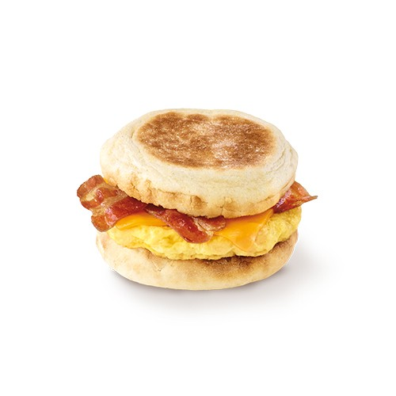

This recipe will show you how to make a breakfast sandwich

Ingredients
- 1 english muffin
- 1 egg
- 2 slices bacon
- Cheddar cheese (enough to create a layer of cheese)
- Ketchup
- Butter
Instructions
- Put a layer of cheddar cheese on one ½ of the english muffin.
- Place both halves in a toaster oven to toast lightly.
- Grease pan with butter.
- Cook bacon in frying pan to desired crispiness
- Crack eggs in bowl and beat until combined.
- Cook liquid eggs in frying pan until cooked.
- Assemble english muffin, bacon, and eggs into a sandwich. You may want to break bacon slices in ½ to fit the english muffin
- Add ketchup.
Reference
No particular website or video, this is just a meal I have regularly. Based on Egg McMuffins and Tim Hortons Egg Sandwich.